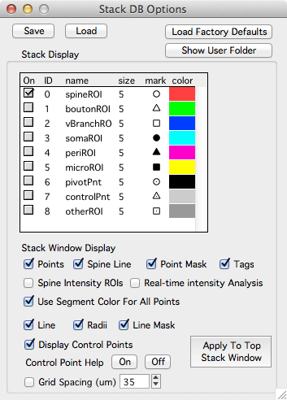

Stack DB Options
Stack DB options provides many options to control how a stack db is displayed.
From any stack db window, open stack db options with the 'Options' button.
The stack db options panel is split into two main sections, one short and one long.

The top section allows you to save and load one set of stack db options.
Save. Save these options. The next time you run Map Manager, these options will be loaded.
Load.
Load Factory Defaults.
Show User Folder. Shows the User file directory on the hard-disk. User files can be used to load a set of predefined options into map manager. For example, you can specify the default min/max of a stack display.
Stack Window Display
Here you can toggle options on and off when annotating a stack with a stack db. Each time you change an option (e.g. 'points') you need to press 'Apply To Top Stack Window' for the changes to take effect.
Points. Toggle stack db objects.
Spine Line. Toggle the line connecting the spine head to the segment radius.
Point mask. Turn point masking on/off. By default, stack db objects are shown and not shown (they are masked) based on the image plane you are viewing.
Tags. In a stack window, the tags are the stack db point number. In a map, the tags are the run number of the point. See xxx.
Spine Intensity ROIs. Toggle the three intensity analysis ROIs: spine, segment, and backbone. See Intensity analysis.
Real-time intensity analysis.
Use segment color for all points.
Line. Toggle the segment backbone line and radii lines.
Radii.
Line Mask.
Display Control Points
Control Point Help Use the 'On' and 'Off' buttons for some additional visual cues about your segment line fits. The end of the line fit is shown in red. This is useful when making the same segment across timepoints in a map. It helps you fit each segment in the same direction.
Grid Spacing (um)
Points
fill this in and make sure it works
Lines
fill this in and make sure it works
Miscellaneous
Warn On New Objects (shift-click)
New Objects On Mouse Click (no shift)
Line points to search when connecting spine/bouton
Left/Right arrows will scroll through line (otherwise pan)
Default Segment Radius (um)
Importing Segments From FIJI
On import, Filter SWC Box Width
Filter Radius, Box Width
Convert To 8-bit. Will convert to 8-bit (in Fiji). This makes line fit much faster.
Close Fiji When Done
Intensity Analysis
Width (um)
Extend Head (um)
Object Map
Default Run +/-. Set the number of sessions to display when selecting right-click menu 'Plot Run +- n'.
Run Window Width (pixels). The size of each window in a spine run.
Maximum Allowed Connection Distance (um). When using '', the threshold distance to allow an auto-connection between spines.
Default Zoom Width (um). When snapping to a spine, the default zoom. The width of the window view in um.
Default Zoom Height (um)